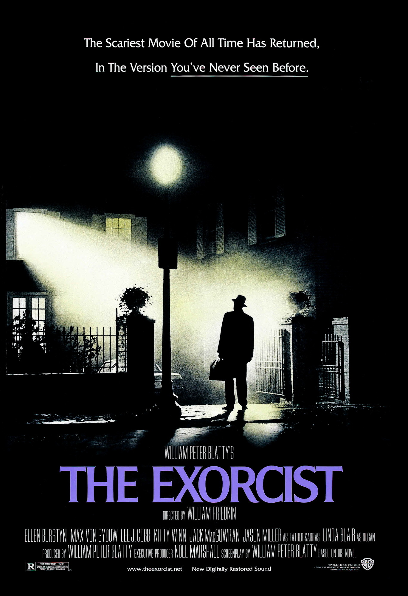

Top $10 Theater
 大法師（The Exorcist）—1973 《大法師》（英語：The Exorcist）是一部1973年的美國恐怖電影，由威廉·弗萊德金導演， 並且由威廉·彼得·布拉蒂根據其1971的同名小說編劇而成。此小說是受到1949年羅蘭·多伊驅魔事件的啟發而撰寫的， 此事件涉及了一位被惡魔附身的小女孩，她的母親不顧一切的嘗試拯救自己的女兒，並請來了兩位神父來指揮這次驅魔工作。 本電影由艾倫·伯絲汀，麥斯·馮·西度，傑森·米勒，李·柯布，琳達·布萊爾，和梅賽德斯·麥坎布里奇（僅配音）主演。 在二十世紀六十年代晚期到七十年代中期這段時間，有一系列「附身兒童」電影被創作，《大法師》與《魔鬼聖嬰》以及《凶兆》都是這一時期的作品。 華納兄弟於1973年12月26日在美國發行。影片獲十項奧斯卡金像獎提名，獲獎兩項（最佳音效獎和最佳改編劇本獎）， 同時它也是歷史上第一部被提名奧斯卡最佳影片獎的恐怖電影，在最佳影片獎上敗給了《騙中騙》。《大法師》在當時為票房收入最高的電影之一， 上映後全球票房收入超過了4.41億美金。本電影對通俗文化（或稱流行文化）有著很重要的影響，它曾被娛樂周刊（Entertainment Weekly），Movies.com ，以及美國AMC（American Movie Classics）電視台的觀眾（於2006年）譽為有史以來最恐怖電影， 且在「最佳百大恐怖電影瞬間」（Bravo's 100 Scariest Movie Moments）中排名第三。在2010年，美國國會圖書館將這部電影收錄在了國家電影名冊中 通貨膨脹計算器（1973-2015，單位：美元）：